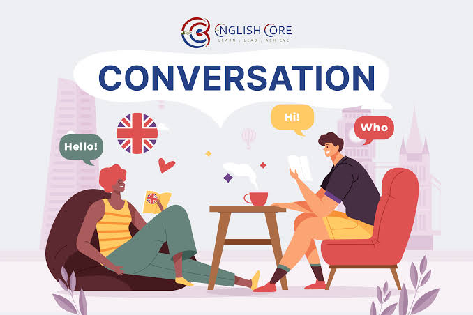

Conversation

แปลว่า "การสนทนา" หรือ "การพูดคุยกัน" ระหว่างบุคคลตั้งแต่ 2 คนขึ้นไป เพื่อแลกเปลี่ยนข้อมูล ความคิดเห็น หรือความรู้สึก - ตัวอย่างประโยคพื้นฐานสำหรับเริ่มต้นบทสนทนา เช่น Nice to meet you. – ยินดีที่ได้รู้จัก How's it going? หรือ How are things? – เป็นอย่างไรบ้าง Long time no see. – ไม่ได้เจอกันนานเลยนะ What do you do? – คุณทำงานอะไร